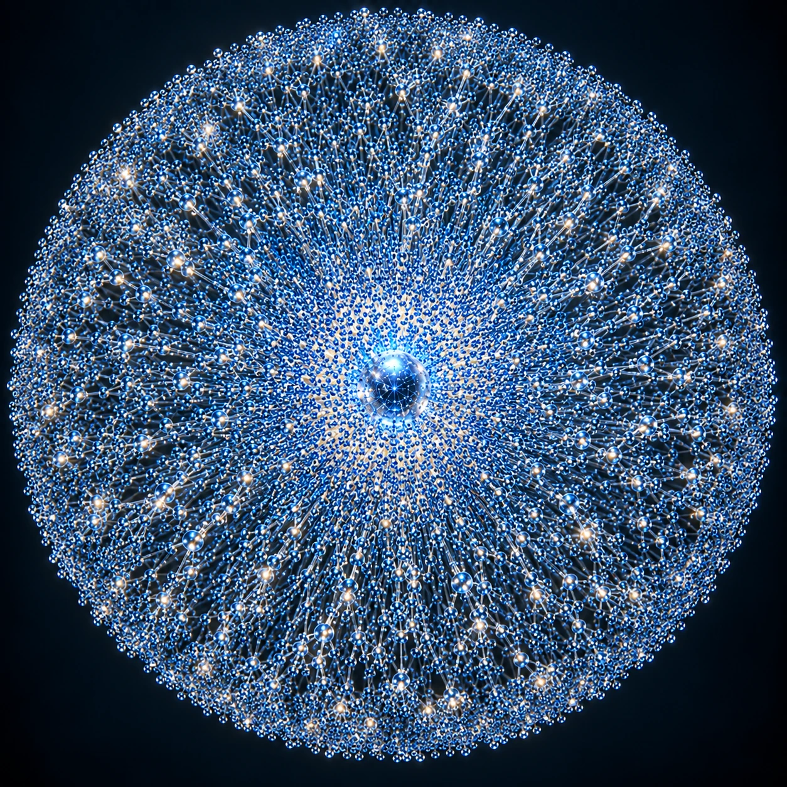
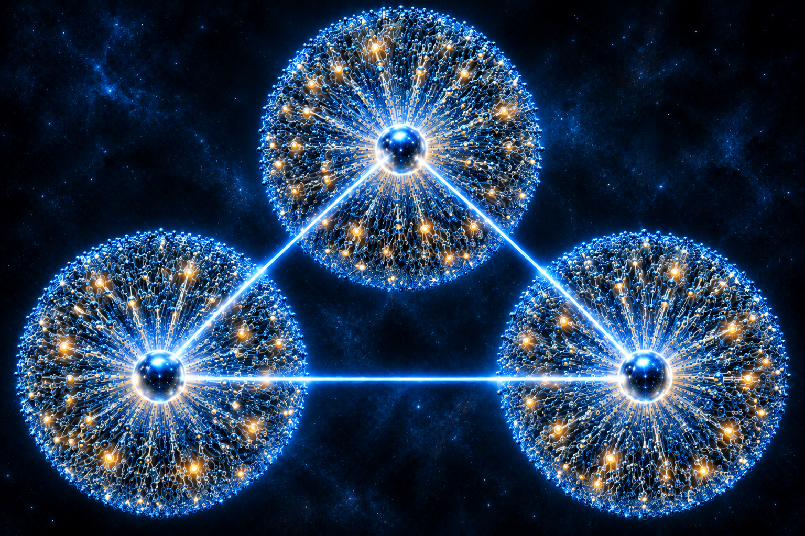
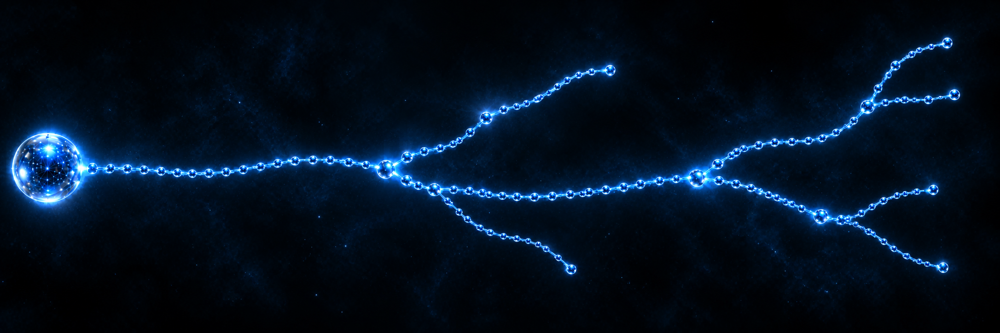

СФЕРИ ПЛАНІВ
Сфера Планів
Сфера Планів — сукупність Планів, об'єднаних навколо одного Центрального Плану через систему гілок і переходів. Від центрального світу виходять численні гілки; вони можуть розгалужуватися, а на кожній гілці розташовані окремі Плани.
Схематична модель

ЦЕНТРАЛЬНІ ПЛАНИ
Три відомі Сфери
На момент завершення другої книги відомі три Центральні Плани: Нульовий, Перший і Другий. Центральні Плани мають прямий зв'язок поміж собою. Кожен із них є центром власної системи гілок.
Зв'язок Центральних Планів

ГІЛКА
Будова гілки
Гілка починається від Центрального Плану. На всій її протяжності розташовані Плани. Лінія може розгалужуватися в окремих вузлах, причому кожне розгалуження починається від уже існуючого Плану. Розгалуження також можуть розгалужуватися.
Приклад однієї гілки

СТАНДАРТ КОДУВАННЯ
Інфопакет. Планетарні світи
Для обліку та навігації між світами використовується уніфікований код планети.
01. Центральний світ
Z0 — Нульовий план, Z1 — Перший план, Z2 — Другий план. Перший блок визначає центральний план, від якого ведеться відлік гілок.
02. Гілка
Друге число — номер портальної гілки від центрального світу. Наприклад, Z0-15 — п'ятнадцята гілка від Z0. У стандартному записі використовується перша гілка від центру.
03. Номер Плану
Третій блок — порядковий номер Плану, відкритого на цій гілці. Він показує черговість відкриття, а не відстань.
04. Клас світу
L — Living: L01 активна цивілізація, L02 примітивна, L03 колонія, L04 технологічна цивілізація, L05 біосфера без цивілізації.
M — Dead: M01 ядерна війна, M02 виснаження ресурсів, M03 кліматичний колапс, M04 пандемія, M05 біологічна зброя, M06 неконтрольовані нанотехнології, M07 токсичне забруднення, M08 геологічна зброя, M09 планетарне зіткнення, M10 невідомий механізм загибелі.
X — Extreme: X01 без атмосфери, X02 кислотна поверхня, X03 надвисока радіація, X04 стерильність, X05 надвисока температура, X06 наднизька температура, X10 аномалія простору або накладання Планів.
U — Unknown: U01 не досліджений, U02 контакт втрачено, U03 нестабільна реальність.
05. Рівень небезпеки
D1 — безпечний, D2 — обмежена небезпека, D3 — небезпечний, D4 — смертельно небезпечний, D5 — доступ заборонено. Рівень може змінюватися після нових досліджень.
06. Доступ до світу
OPEN — доступ відкритий; LIMIT — доступ обмежений; SEALED — портал закрито; LOST — шлях втрачено; UNSTABLE — нестабільний портал.